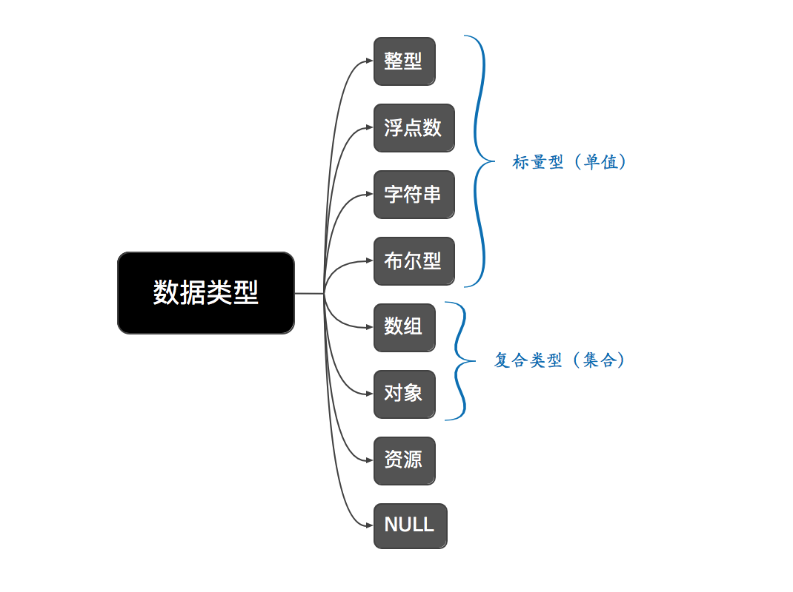

网络编程系列 PHP基础语法
第一章 PHP简单介绍
1.1 PHP和它的应用领域
简单介绍
PHP（全称：PHP：Hypertext Preprocessor，即“PHP：超文本预处理器”），是一种开源的多用途脚本语言，可以直接嵌入到 HTML中，尤其适合 web 开发。
吉祥物（elePHPant）

PHP主要应用在以下三个领域：
（1）服务器端编程，PHP设计的初衷是用于创建动态的web内容。
（2）命令行编程
（3）客户端图形界面编程
PHP的其他说明：
- PHP可以运行在所有主流的操作系统上（Linux、Unix、window、OSX）。
- PHP语言非常灵活，几乎可以生成任何形式的文件。
- PHP支持所有主流的数据库（MySQL、Oracle、Sybase、SQLite等）
1.2 PHP的版本发展
1994 年 Rasmus Lerdorf(勒多夫) 设计了第一版本的PHP，并于1995年发布。
1997 年 11 月PHP 2.0 官方版本正式发布。
1998 年 06 月PHP 3.0 官方版本正式发布，Andi Gutmans 和 Zeev Suraski参与并重写了底层的解析器引擎，拥有了强大的可扩展性。
2000 年 05 月PHP 4.0 官方版本正式发布。
2004 年 07 月PHP 5.0 官方版本正式发布，使用Zend2代引擎并引入了新的对象模型和大量新功能。
2015年 12 月PHP 7.0 官方版本正式发布。
2017年 11 月发布的PHP 7.2.0是最新版本 。PS: 目前PHP官方对5.6之前的版本已经停止维护，之前的很多方法已经被废弃（不推荐使用），另外6.X版本从未正式发布。
1.3 PHP相关参考资料
官方网站：https://secure.php.net/
安装配置：http://php.net/manual/zh/install.php
中文手册：http://php.net/manual/zh/index.php
其他参考：http://www.w3school.com.cn/php/index.asp
第二章 PHP语言基础
2.1 PHP的词法结构
该部分将主要从注释、语句、标识符等方面介绍PHP这门语言的词法结构。
① 注释
PHP语言提供了多种在代码中包含注释的方式，而这些风格都是从其他语言（C、C++、UNIX shell）借鉴的。
（1）可以使用哈希标记字符（#）来实现单行注释。
（2）可以使用C++风格的//来实现单行注释。
（3）可以使用C风格的/**/来实现多行注释。
② 标识符
标识符：标识符即程序中变量、函数、常量和类的名称。一个有效的变量名由字母或者下划线开头，后面跟上任意数量的字母，数字，或者下划线。
语句：PHP使用分号来分隔简单的语句（除结束标签之前和代码块右大括号之后的分号可不写外，其他所有语句都需要使用分号结尾）。
大小写：用户定义的类和函数、内置的结构以及关键字（ex:while class等）不区分大小写，而变量区分大小写。
变量|函数|类名
[1]变量名总是以一个美元符号（$）开始并区分大小写。
变量名示例：$a、$_int、$bill、$Bill等
[2]函数名不区分大小写，以下函数调用都指向相同的函数。
相同的函数名示例：fn() FN() Fn() fN()
[3]PHP中的类名遵循标识符的基本准则且不区分大小写。
关键字：关键字是语言为了核心功能而预留的单词，在对变量或者函数等命名的时候，不能使用和关键字相同的名字，下面列出PHP中的关键字。
1 |
|
2.2 数据类型
PHP本身提供了八种数据类型。其中有四种是标量型的，分别为：整型、浮点数、字符串和布尔值；两种是复合类型的，分别为数组和对象；还有两种特殊类型的，分别是资源和NULL。
① 布尔类型 (Boolean)
布尔类型有两个值，分别是true和false，不区分大小写。可以通过boolean来把数值转换为布尔类型的值。另外，可以使用is_bool( )函数来测试一个值是否是布尔类型的。
1 | # ex: |
在PHP中，以下值的计算结果为false：
- 关键字 false
- 整型值 0
- 浮点型值 0.0
- 空字符串(“”)，以及字符串 “0”
- 空数组
- 空对象
- 特殊类型 NULL
② 整型 (Integer)
整型即整数，可以是正数，也可以是负数。可接受的数值范围通常为：-2147483648到+2147483647，相当于C中的长数据类型范围。可以使用is_int( )函数来测试一个值是否是整型的。
整型字面量可以用十进制数、八进制数、二进制数或者是十六进制数表示。
八进制数由一个0和一个从07的数字序列组成。9）或者是字母（A~F）的序列。二进制数以0b开始，接着由一个数字（0和1）序列组成。十六进制数以0x开头，接着是数字（0
1 | # ex: |
③ 浮点数 (Float)
浮点数，通常简称为实数，是由十进制表示的数值，也叫作双精度数。
1 | # ex: |
备注
（1）浮点数只是数的近似表示，在写代码的时候应该避免假定浮点数是完全精确的。应该避免直接使用==符号来比较两个浮点数，建议比较前几位。另外，可以使用is_float( )函数来测试一个值是否是浮点型的。
（2）某些数学运算会产生一个由常量 NAN 所代表的结果。NAN代表着一个在浮点数运算中未定义或不可表述的值。任何拿此值与其它任何值（除了 TRUE）进行比较的结果都是 FALSE。
④ 字符串 (String)
字符串是一个任意长度的字符序列，字符串字面量由单引号或双引号分隔。PHP对创建和处理字符串等功能提供了核心级的支持。
在双引号的字符串中变量会被解析，而在单引号的字符号中，它们不会被解析。另外，双引号支持多种字符串转义。
1 |
|
在代码中，可以通过==符号来比较判断两个字符串是否相等，还可以使用is_string( )函数来判断一个值是否是字符串。
⑤ 数组 (Array)
数组是一个有序映射，即有序的把 value关联到对应 key的一种结构。
在PHP中存在两种数组：索引数组和关联数组。
索引数组的key(键名)是整数并且从0开始依次递增，如果您需要通过索引来访问数组的元素，那么建议使用索引数组。
关联数组的key(键名)是字符串，类似于JavaScript语言中的对象。
备注
在PHP的内部，其实所有的数组都被存储为关联数组，关联数组和索引数组的唯一区别只在于key的类型。另外，数组中的key具有唯一性，在代码中可以使用is_array( )函数来测试一个值是否是数组。
1 | # ex: |
⑥ 对象 (Object)
PHP支持面向对象编程。PHP语言的面向对象编程基于类(class)的实现。
类是一种包含属性（变量）和方法（函数）的特殊结构，使用关键字class进行定义。
类被定义之后，可以使用关键字new来创建该类的任意数量的对象，通过->结构来访问属性和方法。另外，我们可以使用is_object( ) 函数来测试对象。
1 | # ex: |
⑦ 资源类型 (Resource) 和NULL
资源类型是一种特殊变量，它保存了对外部资源的一个引用。资源类型通过专门的函数来建立和使用。
NULL表示一个变量没有值。该类型存在一个唯一对应的值，即 null（不区分大小写）。
1 | # ex: |
2.3 变量和常量
① 变量
PHP中的变量使用美元符号（$）来作为前缀标识。
变量可以存储任意类型的数据，且不需要显示的进行声明，在第一次被赋值的时候，变量被创建。如果直接使用一个没有赋值的变量，那么它的值为NULL。
另外，可以通过&操作符获取变量的引用。赋值后，两个变量拥有相同的值，修改某个变量的值，另外一个变量的值也会随之改变。（注意:销毁某个变量的值，对另一个变量不会有影响。）
1 | #ex: |
变量的作用域
变量声明的位置决定了其作用域，作用域即变量可以被访问的域（范围）。
PHP语言中存在四种类型的作用域：
（1）局部作用域
- 在函数内部声明的变量是局部变量。
- 局部变量只能在声明的函数内部进行访问，函数外部无法访问。
- 只有函数可以提供局部作用域。
（2）全局作用域
- 在函数外部声明的变量是全局变量。
- 全局变量可以在程序的任务部分被访问。
- 默认情况下，在函数内部不能直接访问全局变量，但可以通过global关键字或者是$GLOBAL数组访问。（3）静态作用域
1
2
3
4
5
6
7
8
9
10
11
12
13
14
15
16
17
18# 全局变量
$n = 123;
# 函数的声明
function f(){
//echo $n; //错误演示：内部不能直接访问全局变量
# 函数内部访问全局变量的两种方式
# [1] 使用global关键字来表明$n是全局变量
global $n;
echo $n; //输出结果为：123
# [2] 使用$GLOBALS数组来访问全局变量
echo $GLOBALS[n];//输出结果为：123
}
# 调用函数
f(); - 在函数内部使用static关键字声明的变量是静态变量。
- 静态变量在函数执行完毕后并不会被释放，其值不会丢失。
- 静态变量只能在函数内部访问。
1 | # 函数的声明 |
（4）函数参数
- 函数的参数（形参）是局部的，只在函数内部有效。
- 函数外部无法访问函数的参数。
② 常量
常量是一个简单值的标识符，建议所有字符大写。
PHP中使用define来定义常量，常量的值不可改变。
1 | # 常量的声明 |
2.4 表达式和运算符
[1]算术操作符
加法（+）减法（-）乘法（*） 除法（/）求模（%）
[2]自动递增（++）和递减（- -）操作符
1 | #ex: |
[3]字符串连接操作符
在JavaScript语言中，连接字符串使用+操作符，而PHP中使用.来连接。
1 | #ex: |
[4]比较操作符
等于（= =）：操作数相等则返回true，否则返回false。
全等（===）：操作数相等且类型相同则返回true，否则返回false。
[5]赋值操作符
基本赋值操作符：等号（=）表示给一个变量赋值。如$n = 5;
其他赋值操作符：
相加赋值（+=）相减赋值（-=）
相除赋值（/=）取模赋值（%=）
相乘赋值（*=）拼接赋值（.=）
2.5 控制输出语句
在PHP中可以使用多种方式来向浏览器输出内容：echo、print（）等。
① echo控制输出
echo结构会把字符串输出到PHP生成的HTML页面中。它本身是一种特殊的语言结构并非真正的函数。echo结构允许一次输出多个值。
1 | #echo 的使用方式说明 |
② print()控制输出
print（）函数也可以向浏览器输出内容，但是一次只能输出一个值。
1 | print ("向浏览器输出内容"); |
③ printf()控制输出
printf()函数能够根据模板格式化输出字符串。printf()函数的输出，是通过替换格式化字符串（即模板）中的值所生成的字符。使用方式同C语言中的同名函数用法几乎一致。
1 | #printf函数的使用说明 |
④ print_r()控制输出
echo和print函数在处理的时候会把参数全都转换成字符串，而如果需要打印的是数组或者对象，那么直接使用echo或者print函数输出无法得知其内部细节。print_r()函数可以智能的打印数组或对象，方便我们调试。
1 | #print_r函数的使用说明 |
第三章 控制结构
PHP语言中的控制结构跟其它语言几乎一样，可以被分为分支型结构和循环型结构。分支结构主要有if…else语句和switch语句，而循环结构主要有for循环和while循环以及do…while循环。
3.1 分支结构
① if..else语句
if..else语句会检测表达式的结果，如果结果为true，则执行if后面的语句，否则执行else后面的语句。
如果要执行的语句包含多条，可以使用{}来包括这些语句。
备注
（1）如果需要进行多条件的判断可以使用elseif语句。
（2）PHP提供了特殊的语法来替代代码块的大括号，可以使用冒号来替代左大括号({)，使用endif来替代右大括号(})。
1 | # if..else的使用示范 |
② switch语句
switch语句会将表达式的值和switch中所有的情况(case)都进行比较，如果匹配到相等的case，那么该case下面所有的语句都会被执行，直到第一次遇到break关键字。
如果没有匹配到任何一个case，并且代码中提供了一个default，那么default关键字下面所有的语句都会被执行，直到第一次遇见break关键字。
1 | #switch语句的使用示范 |
备注
switch语句支持和if..else语句中相同的特殊语法，结尾使用endswitch;
3.2 循环结构
① while循环
while语句是最简单的循环。
语法结构为：
while（expression） statement
如果expression判断为true，则执行后面的statement语句。然后再次判断expression循环这个过程，直到表达式为false时循环退出。
备注
(1) while支持类似if..else和switch的特殊语法，结尾使用endwhile。
(2) 在循环体中可以使用break和continue语句来跳出循环。
【1】break关键字用于结束循环。【2】continue关键字用于跳出当前循环。【3】它们都支持在后面放一个数字，表示要中断多少层的循环。
代码演示
1 | $count = 10; |
② do while循环
PHP语言中do…while循环和其他主流语言中的结构几乎没什么不同。
do…while循环的特点是可以保证循环体中的语句至少执行一次。
1 | #ex: |
③ for循环
for循环的语法结构为：
for（start；condition；increment）{statement(s)；}
在for循环刚开始前，会先判断表达式的值，如果满足条件则执行循环主体，然后执行increment，并再次判断表达式是否满足条件，重复这个过程直到不满足条件为止。
1 | # for循环的使用 |